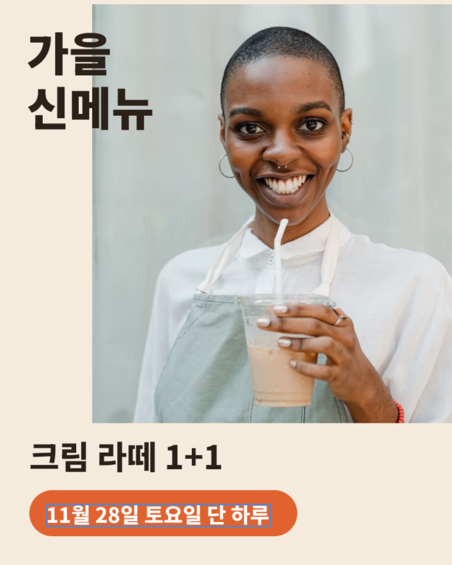
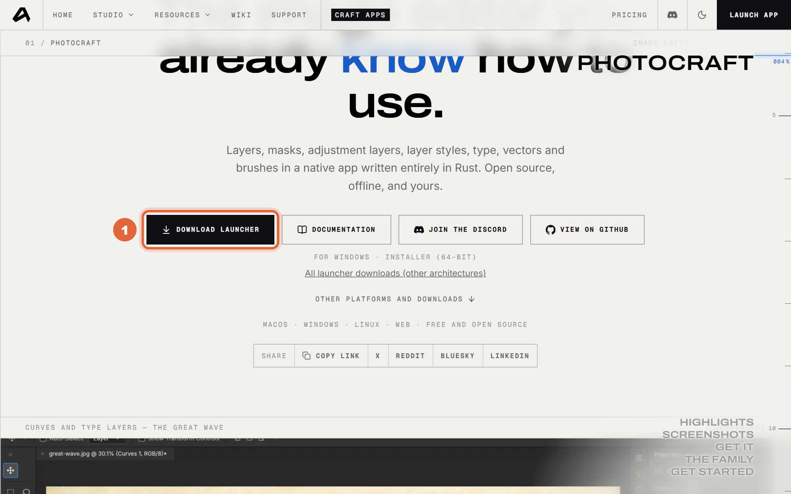
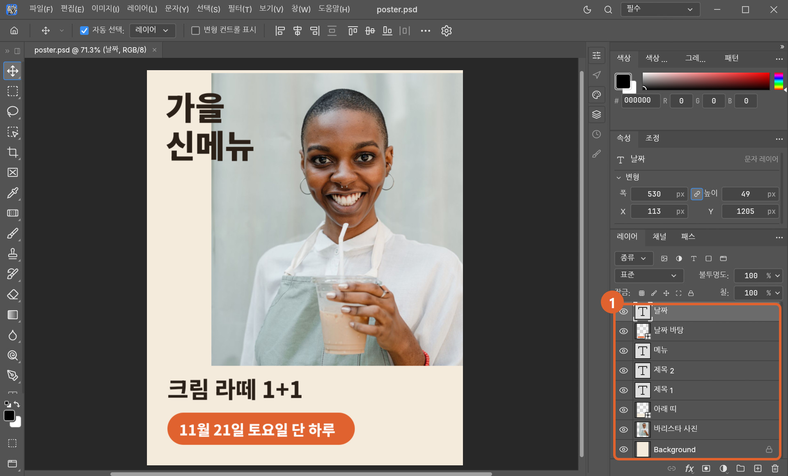
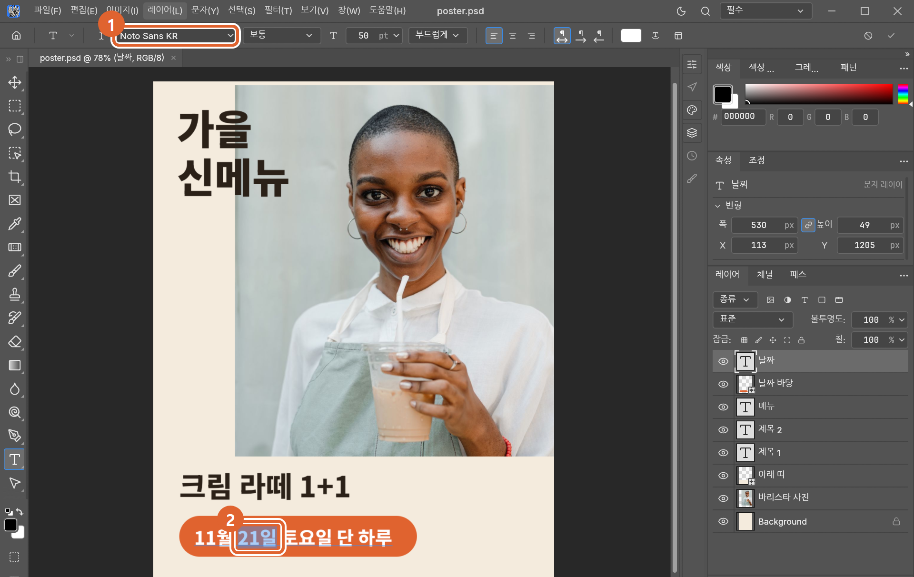
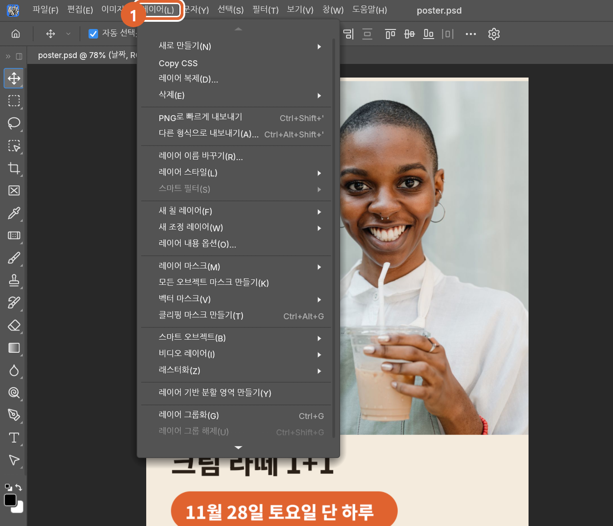
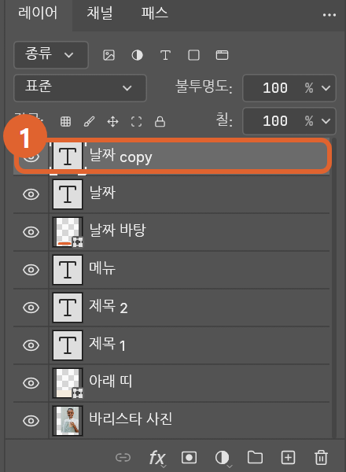
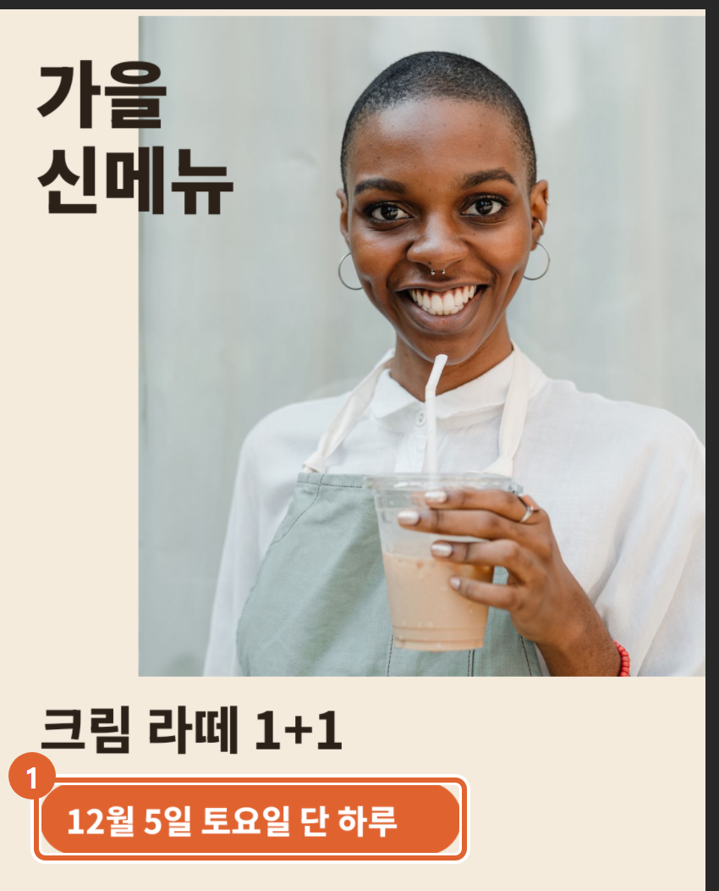

포토샵을 그대로 따라서 처음부터 새로 만든 무료 오픈소스 사진 편집 앱(MIT/Apache-2.0)이에요. 받은 PSD를 열면 사진·글자·도형 레이어가 그대로 있고, 글자를 두 번 눌러 고친 뒤 다시 PSD로 저장돼요. 메뉴·단축키가 포토샵 자리 그대로라 쓰던 손이 그냥 가고, 클로드 같은 AI를 연결하면 '날짜 바꿔 줘' 한마디로 앱을 직접 만져 고쳐요. 인터넷·계정 없이 윈도·맥·리눅스·브라우저에서 돌아가요. 저희가 윈도에서 직접 돌려 본 화면이에요.

getartcraft.com/apps/photocraft → DOWNLOAD LAUNCHER(윈도 설치 도우미)로 깔아요. 설치 도우미 없이 앱만 받으려면 github.com/storytold/photocraft/releases/latest → Assets에서 윈도 photocraft-버전-windows-x64.msi(설치형) 또는 -windows-x64-portable.zip(압축만 풀어서 바로), 맥 -macos-universal.dmg, 리눅스 .AppImage. 윈도 파일은 코드 서명이 돼 있고, 같은 페이지 SHA256SUMS.txt로 받은 파일이 맞는지 확인할 수 있어요.

앱을 열고 파일 › 열기(Ctrl+O)로 PSD를 고르거나, 파일을 창에 끌어다 놓아요. 오른쪽 레이어 패널에 사진·글자(T)·도형 레이어가 하나하나 따로 보이면 제대로 열린 거예요.

왼쪽 도구에서 문자 도구(T, 단축키 T)를 고르고 고칠 글자를 두 번 눌러 선택해요. 새 글자를 치고 Ctrl+Enter로 확정. 위 옵션 줄에서 글꼴·크기·색도 바꿀 수 있어요.

Ctrl+S면 원래 PSD에 그대로 저장돼요(레이어 유지). 다른 이름은 Ctrl+Shift+S. 바로 올릴 그림이 필요하면 파일 › 내보내기에서 PNG·JPG로 내보내요.
메뉴 이름·자리가 포토샵과 같아요(파일·편집·이미지·레이어·문자·선택·필터…). Ctrl+J 레이어 복사, Ctrl+T 자유 변형, Ctrl+Z 되돌리기, Ctrl+Shift+D 다시 선택처럼 쓰던 단축키가 그대로 먹어요.


앱이 메뉴 500개 넘는 기능을 전부 명령으로 열어 둬서, 클로드 같은 AI가 직접 조작할 수 있어요. ArtCraft 런처 설정의 'AI agents'(Let AI agents use Craft apps) 스위치를 켜거나 앱의 편집 › 환경 설정 › AI Integrations에서 연결을 켜고, 클로드 코드에 앱 폴더의 photocraft-cli를 MCP 서버(photocraft-cli mcp)로 붙이면 '열려 있는 포스터 날짜를 12월 5일로 바꿔 줘'처럼 말로 시켜요. 저희가 해 보니 클로드가 날짜 레이어의 숫자만 바꾸고 미리보기로 확인까지 했어요.

브라우저 주소창
https://getartcraft.com/apps/photocraft
브라우저 주소창
https://github.com/storytold/photocraft/releases/latest
앱에서 AI 연결을 켠 뒤 터미널
claude mcp add photocraft -- "<앱 폴더>/photocraft-cli.exe" mcp
포스터를 앱에 열어 둔 채로
PhotoCraft에 열려 있는 포스터에서 날짜를 12월 5일로 바꿔 줘. 다른 건 건드리지 마.
도움이 되셨다면
@ai.antenna.kr
에서 바로 쓰는 AI 활용법을 계속 올립니다.